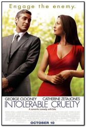
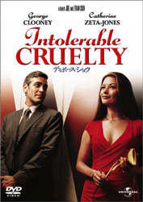
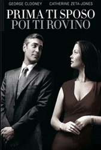
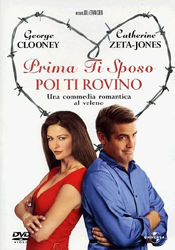
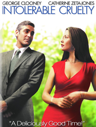

George Clooney
Catherine Zeta-Jones
Geoffrey Rush
Stacey Travis
Edward Herrmann
Kristin Dattilo
Cedric the Entertainer
Wendle Josepher
Paul Adelstein
Richard Jenkins
Billy Bob Thornton
Julia Duffy
Kiersten Warren
Jonathan Hadary
Tom Aldredge
Judith Drake
George Ives
Isabell Monk O'Connor
Kate Luyben
Camille Anderson
Tamie Sheffield
Roger Deakins
Miles Massey, a prominent Los Angeles divorce attorney has everything - and in some cases, two of everything. Despite his impressive client list, a formidable win record, the respect of his peers and an ironclad contract (the Massey pre-nup) named after him, he's reached a crossroads in his life. Sated on success, boredom has set in and he's looking for new challenges. All that changes when Miles meets his match in the devastating Marylin Rexroth. Marylin is the soon-to-be ex-wife of his client Rex Rexroth, a wealthy real estate developer and habitual philanderer. With the help of hard charging private investigator Gus Petch, she has Rex nailed and is looking forward to the financial independence a successful divorce will bring. But thanks to Miles' considerable skills, she ends up with nothing. Not to be outdone, Marylin schemes to get even and as part of her plan, quickly marries oil tycoon Howard D. Doyle. Miles and his unflappable associate, Wrigley, unwittingly dig themselves in deeper and deeper as they go head-to-head with Marylin. Underhanded tactics, deceptions and an undeniable attraction escalate as Marylin and Miles square off in this classic battle of the sexes.
Intolerable Cruelty was the Coens' first job as writers-for-hire. It was based on an original concept by John Romano, and had been developed into a screenplay by Robert Ramsey and Matthew Stone, who wrote Big Trouble (Barry Sonnenfeld, 2002) and Life (Ted Demme, 1999).The script was passed among directors and writers for several years, usually starting from the Coens' version.
Initially the screenplay was attached to Ron Howard and then Jonathan Demme, who had planned to cast Julia Roberts and Hugh Grant in the lead roles. After their planned film of James Dickey's novel To The White Sea fell through, the Coens signed to direct the movie and dug out their original script to work with.
Filming began on 20 June 2002 after being delayed due to George Clooney's schedule. Most of the film was shot around Beverly Hills; some was filmed in Las Vegas during a week at the end of production. With a budget of $60 million, it is the most expensive film directed by the Coens.
On review aggregator Rotten Tomatoes, the film has an approval rating of 75% based on 187 reviews, with an average rating of 6.80/10. The website's critical consensus reads, "Though more mainstream than other Coen films, there are still funny oddball touches, and Clooney and Zeta-Jones sizzle like old-time movie stars."




